2011 年的 PokerStars CAP（封頂）現金桌打法指南，作者 Wizard of Ahhs（themortalnuts.com）。 這頁只是把原始 Word 檔重新排版並附上原檔的圖表，內容與數字沒有更動。
GENERAL INFO
- You are going to make mistakes learning this system. It is always better to error on the side of aggression.
- BB is used as big blind in this document (same as bb).
- Hand notation like “AQ+” means AQs+ and AQo+. It will be noted specifically otherwise.
- With 5 players at a table, positions are HJ/CO/BTN/SB/BB. With 4 players at a table, positions are CO/BTN/SB/BB.
- A NIT is defined as any of the following:
- Anyone with a VPIP < 20% at 6max
- Anyone with TAG stats that has a BTN stat of < 10% 3bet vs. a CO open
- The number of hands you have on an opponent will appear colored in the HUD.
- 0-499 is pink
- 500-999 is purple
- 1000+ is blue
- Your stack size in BB’s in the HUD will appear colored based on its size (this will correlate with 3betRanges.png).
- <= 11BB = red
- 12-15BB = yellow
- 16-18BB = green
- => 19BB = grey
INSTALLING THE HUD
In Hold'em Manager click on "HUD Options" in the top dropdown menu; open "Player Preferences..."; then click on the "Import" button and locate the WizHUD2011.xml file on your hard drive and click open. Be sure to hit "OK" in the player preferences window when finished. Now everything should be displaying properly in your HUD when playing.
ADDITIONAL HUD FILTERS
In Hold'em Manager click on "HUD Options" in the top dropdown menu; then open "Additional HUD Filters...". The recommended settings are shown below:
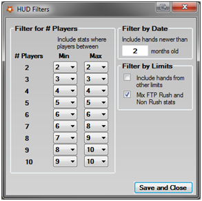
Once completed, click "Save and Close" and then make sure you hit "OK" in the player preferences window when finished.
NOTE FOR NEW PLAYERS: If you are just starting out at a new limit and do not have many hand histories accumulated in your database, then it is okay to set the player filters the same for 5 and 6 players. In other words, for # Players 5 the filter Min can be 5 and the filter Max can be 6. The same can be done for 6 players; the filter Min can be set to 5 and the Max set to 6. Also, you can 'check' the "Include hands from other limits" box. Remember these are all just temporary adjustments until you have more statistics gathered on your opponents. I recommend changing to exactly as shown above in the screenshot after you have one month of solid grinding under your belt at your new limit. Purchasing Hand Histories to beef up your database would be a good idea in theory; however, it is against many online poker site's terms and conditions agreement. Therefore, I am personally unable to make this particular recommendation.
WHEN TO LEAVE THE TABLE
Sit out and get up if the table has less than 3 people (including you) unless you are very comfortable playing heads-up poker. Many opponents change their styles drastically when HU and 3 handed, and some even do so when 4 handed.
RELOADING
Reloading is up to you. I have provided you with all the tools needed to play stack sizes all the way down to 1 big blind if you prefer. Therefore, go to "Options" in the PokerStars lobby, set your "auto re-buy" to automatically re-buy "If I fall under X big blinds", X being your chosen BB minimum.
EFFECTIVE STACK SIZE
When figuring out what play to make, always use the effective stack. The effective stack is the smallest stack involved in the hand. This is most often 20BB in the CAP games, but not always. If your opponent has a smaller stack than you do, it may change how you are supposed to act in the hand.
TAKING NOTES
The following is the system I use for taking notes (which has evolved over time from some silly symbols/naming), but use what works best for you. Players will often do multiple things listed here. For example, if a player calls 3bets light and is a fish, mark him orange in PokerStars and green in HEM HUD (or vice versa). I can't stress enough the importance of taking notes when you are playing (even if it's only color coding and no text). Note taking will keep you focused in the games and allow you to make more accurate decisions in the future against these opponents.
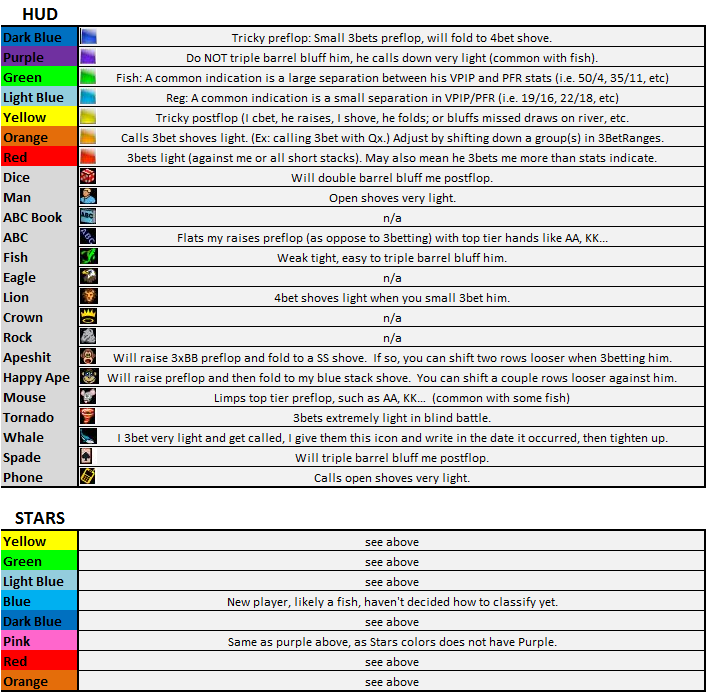
PREFLOP GUIDELINES
Any time you are facing a preflop raise, use the 3BetRanges chart. If you are facing a preflop open shove, use the Calling Open Shoves section. For all other preflop scenarios, use the following chart:
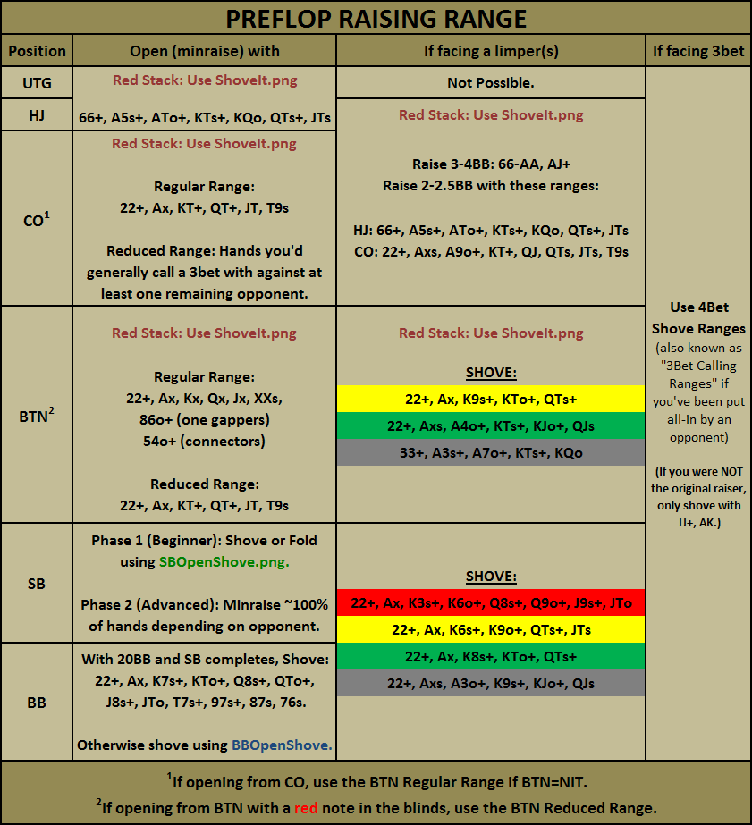
Note that if you're a beginning player, you should probably just open shove or fold from the SB when presented with a steal attempt. If you are an intermediate to advanced player (i.e. you are comfortable playing OOP [out of position] poker against the BB opponent), you will minraise steal close to 100% of hands from the SB as described later in this document. This is very important if you want to progress as a player and win more money.**
**After long term study of winrates from the SB using only openshove techniques, -18bb/100 is achievable long term. But through expert OOP play via preflop minraise stealing, some CAP game specialists such as myself have proven to sustain long term SB winrates between 0 to -10bb/100. The information regarding this method of play is detailed later in this guide. However, it's possible you may need further coaching from me to improve your SB winrate beyond -18bb/100.
Using the range shown above for UTG and HJ, you still appear tight to other players from these positions. When you get 3bet in these early positions, your opponents will usually hold stronger hands. You will need to learn to fold hands like AQo and 99 versus a 3bet from most opponents. They will simply not hold up well long term against most opponents. However, reference your opponents HUD stats to make sure this is the case. Some players may in fact prove to be quite loose versus most UTG openers. When this is the case, calling with 99, AJs, and AQo is profitable long term.
An exception to the above "Use 4bet Shove Ranges" section in the matrix above:
The chart shows that if you were not the original raiser and someone 3bets in front of you, then you should only go allin with JJ+ and AK. However, this is not always the case and you should investigate the positions and players involved in the hand when deciding if you should commit your stack allin. Remember, you will not have any fold equity, so you must be fairly confident that you are likely ahead in the situation at hand. For example: TT is the almost always the nuts in the following situation: the SB shoves over a BTN stealer and you hold TT in the big blind. Coming over the top in other situations with TT will be a judgment call that you need to make based on the player/table dynamic; but remember it's usually fairly borderline. For example, a fairly loose HJ opponent (20% PFR) opens, and then the CO jams (who happens to 3bet a fairly decent amount in this situation relatively speaking at 7%). If you're in the BB with no one left to act but the original raiser in the HJ, then it's as borderline as it gets with TT. However, let's say you're on the BTN with three players left to act (including the HJ) in this same situation. That tips the scale it and TT becomes a fold due to more unknown variables. In this scenario the players are pretty loose – when you're dealing with a 14% HJ opener and a 4% 3better, TT becomes a snap fold.
Taking RED notes:
When raising such a high percentage of hands from the BTN, some opponents will start 3betting you with a much wider range. When this happens, make a red note on the opponent and then adjust by tightening up to the CO range, aka" reduced range", when stealing from the BTN when the red note opponents are in the blinds. This is especially important if an opponent gets out of line with you in particular. So, if an opponent supposedly 3bets BTN steals 13% of the time, but then you call his 3bet allin and he shows down a hand like A4o, then according to our Hand Ranges.png, we know he is 3betting us much higher than his stats indicate (likely putting him at around 20%+, not 13%). You will use these red notes to quickly check the blinds before determining which range of hands to steal with: the regular or reduced range. By default I will also give red notes to players that 3bet more than 20% versus a BTN opener. This enables me to quickly identify these aggressive opponents before attempting to steal.
At what point is someone 3betting you light enough to denote them as RED?
It's primarily focused around how light someone 3bets you from the blinds when you steal from the BTN. Most players are going to be somewhat conservative when 3betting UTG-CO openers. When they 3bet a massive hand range (30% or so) from the BB when I steal from SB, I give them a 'tornado' symbol in HEM as shown in the "Taking Notes" section.
When I steal from the BTN and the combined 3bet % versus BTN stealing from both players in the blinds is 45% or greater, then I steal with my reduced range. So, a red note could be given to just about anyone who 3bets greater than 20% from the blinds against the BTN steals. In a scenario where one player has something like a 21% 3bet and the other has 27%, these red notes will quickly flag your awareness. You then quickly calculate this particular scenario as 48% total and only steal with the reduced BTN range listed in the material.
If you are opening in the CO, quickly glance at the last number in the 5th row of the HUD for the BTN opponent. This is their 3bet from BTN versus CO openers. If this is <10% and the opponent’s VPIP/PFR are within 4-5% of each other (i.e. opponent is a 22/18) or their overall VPIP is <20% (i.e. opponent is an 18/12), use the BTN "Regular Range" as your PFR open range. So in essence you should steal in the CO similar to the above BTN discussion on red notes when faced with nitty players left to act. So, if you scan to your left and see the BTN, SB, and BB totals for 3bets are less than 45% versus CO steals, then you steal with the BTN Regular Range effectively from the CO position.
How to Use the SBOpenShove Chart
This chart is to be used by beginning CAP game players when stealing from the SB. If you comfortable playing OOP poker, then I suggest referencing the information detailed later in the guide regarding minraise stealing from the SB.
If you are in the SB and it has folded to you, simply find your hand, compare the number in the cell to your stack size in big blinds, and shove or fold. For example, if you hold K6o in the SB and it folds to you, shove with up to 13 big blinds, and fold with more.
These SB open shove calculations were determined by retrieving data from millions of actual hand histories. I gathered the hands that the BB players were showing down at all stack sizes. I weighted them to determine the optimal open shove range with every possible stack size. Keep in mind that these calculations take millions of hands to approach long term expected value. So as always, variance is going to play a factor any time you are allin, but your expected long term winrate will likely be around -18bb/100 from the SB using this chart.
How to Use the BBOpenShove Chart
This chart is used when you are in the Big Blind and it folds to the Small Blind and they complete. If the effective stack size is 20BB, the range is listed above in the chart. If the effective stack size is lower, simply find your hand in the BBOpenShove chart, compare the number in the cell to the effective stack size. Shove with up to the number shown, and check with everything else.
For example, if you are in the BB with 9BB holding T5s and the hand folds to the SB and they complete, you would shove. (T5s shows a 10 in the chart so you would shove with up to 10BB’s).
3bet Exception
If you get 3bet, follow the 4bet shove ranges chart (found later in this guide) except if you are min 3bet to 3BB. In this case, call the 3bet with ATC (any two cards) and then approach postflop play cautiously.
Additional Tips
- Your preflop raising range may change over time. It will depend on the stakes you are playing and how long you’ve been playing those stakes (as your opponents will adapt to you).
- If there are limpers and you are comfortable playing postflop poker out of position, you may opt to complete in the SB from time to time with marginal holdings such as QTo, J9s, 22, etc.
3BET SHOVE RANGE
When you are facing a raise, use the 3BetRanges chart. Each colored block represents the effective stack size, which matches the color of the stack sizes in the HUD. The numbers on the left side of each colored block represent the opponents PFR or STEAL stat which is the second HUD row (UTG, HJ are PFR; CO, BTN, SB are Steal). This number is the baseline for shoving over their raise. You must also take into account the color of the opponents fold to 3bet% (third HUD row). The fold to 3bet% stat color ranges from low to high as follows: purple, red, orange, yellow, green. You don't need to memorize the percentages; focus on the color and what it means relative to your action as explained below. Depending on the fold to 3bet% color and your current position, you will move up or down rows as shown below to find your 3bet shove range:
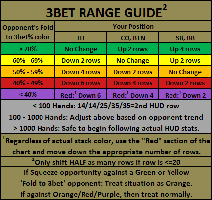
The reason we move down more rows from the HJ, CO and BTN is to compensate for the players who have yet to act. If you have an orange note (from calling 3bets light) on your opponent, shift down one or two groups to compensate based on just how liberal this opponent appears to be with their 3bet calling.
When using the 3BetRanges chart, the number of hands you have on your opponent is critical. With less than 100 hands on your opponent, use the following generic PFR/ST (second HUD row) stats: 14/14/25/35/35 as a generic assumption for the average player and assume fold to 3bet% is orange (no shifting is required). From 100-1000 hands, you can begin to average your opponent’s stats with the generic stats I have listed. Once you have over 1000 hands on the opponent, it's generally safe to use the stats indicated in the HUD.
Example 1: UTG folds. HJ (17BB stack) raises to 2BB. CO folds. You are on the BTN holding KQs. You reference the top row of the HUD for this player. It shows 1105 hands. You have enough hands to review this players overall statistics with some accuracy, so you check the second HUD row for this player and it reads: 15/21/26/55/43. This represents UTG/HJ/CO/BTN/SB. His stat is 21 in the HJ. Now, check his fold to 3bet% for the CO (usually located directly below the 21 on the third HUD row). The third HUD row reads 27/43/54/71/50. Since the effective stack in this hand is 17BB you reference the 20 row in the green block since his PFR/ST stat was 21 (round to the closest number). Since his 'fold to 3bet' stat is red and we are on the BTN, you must shift down 4 rows in the chart, however since we're dealing with a PFR/STL of 20% or less, then we are shifting down HALF as many rows, therefore we will be shifting only 2 rows down. Your 3bet range in this situation is 66, AJs, AJo, and KQs. These are the minimum requirements for 3bet shoving in this scenario. You have KQs and can push all-in.
Example 2: UTG (20BB stack) raises 2BB, HJ folds, CO (16BB stack) calls, and the BTN folds. You are in the SB holding AJs. When facing a raise and caller(s) [this is a squeeze opportunity], apply the 3BetRanges chart to the original raiser and generally ignore any callers (and ignore their stack size when calculating the effective stack). UTG has a 14% PFR/ST stat and an orange fold to 3bet%. You find row 14 in the grey block and are not required to shift at all. Row '14’ shows 88, AQs, AQo. As tempting as it may be to shove, you should generally fold the AJs here.
Example 3 (tricky spot): A reg you have 5k hands on opens UTG. He opens a very wide 27% from this position and folds 71%. You are in the SB with A7o and effective stack of 20bb. You quickly glance at the grey chart to determine if you should fold or shove. You shift up 4 rows from 27% which would put you in between the 45-50% rows, i.e. 22, A2s, A5o, K9s, etc. However, this is a tad too loose for this particular situation and the circumstance needs the following consideration. The green shift (listed as > 70% fold to 3bet) is actually meant for closer to 75% fold for complete accuracy. Imagine 75% is a full 4 row shift up when you're on the BTN, and 69% is a shift of about 2 rows upward (because 69 is in the yellow range). Thus, if you were to make more of a precise shift for his 71% fold to 3bet it would be up about 3 rows on the 3BetRanges chart (rather than a full 4). Since the chart only has 25% and 30% (not 27%), you would likely start from 25 and shift up to 40. You'd play something similar to the 22, A2s, A8o, KTs, KJo, etc range as indicated by the 40% row, which does not include your A7o, making this hand a fold.
Additional Tips
- Inside the actual fold to 3bet% ranges, you can use the edge numbers to move rows for slightly more accuracy. For example, if you were on the BTN facing a raise from an opponent with a 49% fold to 3bet, you could move down 1 row instead of 2.
- The chart is based on a minraise. If someone is opening with a 3BB raise, you can technically move up a row in the 3betRanges.jpg chart for each 0.5bb he raises above a minraise of 2bb. However, I generally do not shift at all at mid and high stakes when a player raises 3BB preflop, as players who raise 3BB rather than minraise are generally much more apt to call an allin 3bet, and thus negating the benefit of the extra 1BB in fold equity. However, I'm told this isn't always the case at the 100nl and lower and this is often just these players standard opening raise size.
4BET SHOVE RANGE
Assuming you were the original raiser, the below chart describes when you should 4bet shove (or call a 3bet that puts you all-in). Using your opponent’s 4th HUD row, simply round to the appropriate percentage.
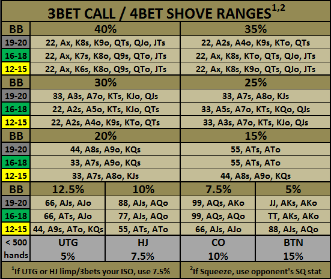
Once you develop history with your opponents (especially as you move up) you’ll need to make adjustments (red notes).
If an opponent is squeezing, use his SQ% stat instead of his 3bet% to determine whether to shove allin. Your opponents squeeze stat is located in the first row of the HUD, as indicated in the HUD Explanation graphic in "The HUD" folder.
Example 1:
You raise on the BTN with KTo. You minraise and the SB goes allin with a yellow stack. You look at the HUD for this player and see that he 3bets versus BTN stealers approximately 20% of the time. So you check the chart for the 20% section and yellow stack (12-15bb) and see that you may call the allin with 33, A7s, A8o, and KJs. Based on this information you must fold your hand, KTo.
Example 2:
You have 33 and minraise from the SB (assuming you're not using the SBOpenShove.png. The player in the BB has 20BB and he 3bets your minraise to about 5bb. You check his HUD and see that he is very aggressive and 3bets SB stealers about 30% of the time (and possibly 3bets you even more than that if you have any history with him at this point since you steal so much from the SB if you're minraising near 100%). So you reference the chart for 30% and grey stack and see that you may 4bet allin with 33, A3s, A7o, KTs, KJo, and QJs. Your 33 falls into this range, so you shove allin!
Some opponents will 3bet small as in the example 2 above. If he folds to your 4bet shove, mark him with a dark blue note so that you are aware of this in the future and can open up your 4bet shoving range a little bit against this particular opponent (I usually 4bet one group looser).
CALLING OPEN SHOVES
You will commonly face open shoves from other players. Use the guidelines below along with good judgment. Remember to use effective stack size.
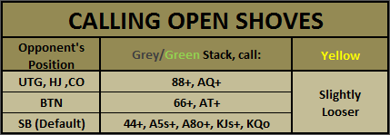
If the opponent is in the SB, note taking is very important. If you don't already have a higher priority color note, add a light blue note indicating what hand they open shoved in the SB with was (as well as stack size if outside the normal CAP 20BBs). Add this information to your notes (if you already have a higher priority color note, just keep the note the same color but add this shove information text to the note). Over time, add to the note when you feel you are getting close to the bottom end of his open shove range based on your experience with him.
For example, if an opponent in the SB shoves T9o with 17BB. This gives you a lot of information. Next time, you can plan on snapping him off with hands like 33+, A2s+, K9s+, QTs+, JTs, A4o+, KTo+, QJo. However, until you have proof that your opponent is open shoving a large range, continue to use the default calling range. If you call a SB’s open shove with 88 and he shows A9o (this is standard), there is no need to make a note; just continue calling his open shoves with your default range.
When facing an intelligent short stacker, their range is going to be highly dependent on their stack size. The default calling range in a 10BB effective stack size blind battle is approximately the top 33% of all hands (reference the Hand Ranges chart that I provided in 'The Charts' folder for information on top percentages of hands). Some short stackers will even shove 100% of their range with around 10BB or less. Once you have a feel for their range, make a note and start calling as follows when faced with a 10BB effective stack:
| Opponents Open Shove Range with ~10BB or less | Our Calling Range |
|---|---|
| Unknown | ~33% |
| 100% | 40% |
| 83% | 35% |
| 61% | 30% |
| 50% | 27% |
| 43% | 25% |
POSTFLOP GUIDELINES
Beginners will rarely be calling a raise preflop, your primary move is to either 3bet or fold to your opponent, minimizing the necessity to play postflop poker. So, if you didn’t 3bet or 4bet shove preflop and you still have cards, you raised preflop and someone else called you and you're forced to see a flop.
Later I can cover more advanced topics involving flatting your opponents range (namely from the BB when a SB or BTN opponent is stealing with a high frequency.) This can be very tricky, and there are far too many scenarios for me to cover in this guide, and it's not recommend it for beginners. If you're an intermediate or advanced player seeking to improve your BB winrate from -40 (expected longterm winrate when just 3betting or folding preflop from the BB) to between -28 to -35, then I suggest scheduling one of my one on one coaching sessions for help mastering this calling from the BB technique.
All the information below can be used as a solid basis for effective postflop play for those of you looking for some guidance on how to play postflop with 20BB stacks. For many more examples of post flop play, reference the videos I have posted on UltimateGrinders.com. Watching my videos is a great way to perfect your postflop game.
FLOP: HOW MUCH TO CBET
- If HU, cbet 2BB.
- If multi-way, cbet ½ - ¾ pot if you hit a piece of the flop.
FLOP: WHEN TO CBET
- Cbet all dry flops when HU even without any piece of it.
- Examples: paired flop: TT2; two small and one card higher than T: J82
- Cbet wet flops if you have a piece of it.
- Examples: QsJs9d: cbet with AQ, KQ, QT, JT, T9 and better obviously.
- Cbet with top pair or better and be prepared to shove if re-raised.
- Consider folding in the following situations: (TPTK would be the very least you need to continue):
- If you cbet, get raised, and a third person re-raises.
- If you cbet, get called and a third person raises.
- In HU action with TPWK on a wet board and you get put all-in. Example: K2 on KQ9 board.
- Cbet when you have OESD or flush draw. Note that these hands are all-in worthy most of the time.
- If your stack size is low in relation to the pot size, then shoving is preferred over cbetting.
- If you cbet and are reraised, you can usually shove. The odds won’t always be perfect for the draw, but you will often be raised/checkraised lightly as a short stack by mid pairs, etc. Many times you will have more outs than just the draw, so it’s usually a flip. And If the reraise/checkraise is small, you will also have fold equity.
FLOP: WHEN NOT TO CBET
- Don’t cbet HU if texture is wet without a piece of it.
- Example 1: The flop is QsJs9d and you have 44, Ac8d, Jc7c. However, call if your opponent decides to lead out turn (after the flop goes check-check) with middle/bottom pair for showdown value. If he does not lead out, and instead checks the turn, then bet 2BB.
- Example 2: The flop is monotone and you don’t have the K or higher of that suit, check in position. If your opponent checks on the turn, bet ½ pot.
- Don’t cbet in multi-way pots without TPMK/better or a decent draw regardless of board texture.
- You should still cbet K8 on K67 dual tone flop.
- Generally, don’t cbet middle pair when IP... I like to wait and cbet turn, or check/call if they decide to lead out turn.
- Some opponents will float you a lot IP forcing you to play OOP. Checkraise all-in on flops where you hit top pair/better or draws as most opponents will bet when checked to in this situation. (Draw in this instance means: OESD, flush draw, and gutters with two overs (AK on JTx flop).
FLOP: WHEN DONKED INTO
Many times you will minraise and get called by an OOP opponent. If you have nothing, and they donk bet 1-2BB on the flop, call with a hand that shows down well against a fish, like Ace high. Example: If you have AJo, and the flop is 872 or Q73, call the flop donk bet. If he fires bigger on the turn, usually fold. However, call a small turn and/or river bet with hands that showdown well.
TURN: WHEN TO BET
- If flop was checked around, always bet ½ the pot if you are IP (if HU bet 2BB).
- If flop cbet was called and HU, and you still have no piece of the board, double barrel 4BB.
- If flop cbet was called and HU, and you have a good hand still, cbet 4BB or 7BB-shove (depending on your stack size and the relative amount you cbet on the flop).
- If flop cbet was called and multi-way, shove with good hand. Otherwise, try to get to showdown cheaply or fold.
- If someone bets out small and you have a piece of the board, you might make a call if you think your mid pair is good. You can’t go wrong by just folding here though.
RIVER: WHEN TO BET
- If you double barreled the turn with nothing, triple barrel around 10BB or shove (if between 7-13BB).
- If you get looked up light by your opponent (mid pair or less), add a purple note and adjust by not triple barreling them again without a decent mid pair or better hand. Gathering this information may be a little expensive at first, but well worth it long run. Remember, it's always better to error on the side of aggression rather than caution.
- If you have a good hand, then feel free to shove even if it’s an over bet of the pot (if it’s too dramatic of an over just bet close to pot.)
- If you have a marginal hand that might be a winner, you will get a feel over time whether to check or bet for value. If you have a purple note on a fish or even a regular who calls down with low and mid pairs, and you happen to have mid pair with top kicker (i.e. A8 on a J834T board), then consider betting the river allin for value.
- Sometimes you will face opponents who call your flop and turn cbets OOP and then suddenly lead out with a big bet on the river. This is usually an easy fold unless your hand is very strong and it doesn’t appear any draws have hit on the river. However, if it looks like a flush draw or straight draw (although these are harder to predict, but if you think it’s even remotely possible he was on a straight draw and got there, then definitely fold) got there, then your opponent likely hit that draw 9/10 times. Just fold.
IN THE BLINDS
Here are some guidelines if you completed the SB or saw a free flop in the BB.
- If you flopped a combo draw or flush draw with an overcard, checkraise all-in. Otherwise check down for free draw.
- If you flopped a weak draw (gutshot with at least one over, flush draw with no overs, but not sucker end of straight draw) or top pair or better, bet ~2/3rds pot most of the time (sometimes check).
- If you flop less than that, check/fold.
If the SB limped in, and you are in the BB and couldn’t shove preflop (with no one else in the hand):
- If the SB checks the flop, always bet 1BB.
- Call 1BB with any piece of the flop (including a gutshot).
- Call 1BB when the board is paired or very dry (i.e. Q44, K59 rainbow), with plans to take away pot on turn/river.
- Follow above advice for turn and river, except the pot will likely be smaller, so instead of 2:4:10BB betting, use 1:2:4BB. If you get raised at any point, strongly consider laying it down. Don’t go broke in a limped pot.
POSTFLOP GUIDELINES QUICK GUIDE
- Flop HU: Unless wet board AND you missed, cbet 2BB (hit or miss) on all flops.
- Prepared to shove if 3bet with TP or better.
- OESD / Flush draws: All-in worthy.
- Flop MW: TPMK/better, cbet ½ - ¾ of the pot.
- If OOP opponent donk bets 1-2BB, call on flop. If small turn and river donk bets, call against fishy player even with just Ace high.
- Turn HU: Double barrel 4BB with nothing OR 4BB to 7BB-shove if good hand.
- Turn MW: Shove with good hand. Otherwise, get to cheap showdown/fold.
- Turn HU/MW: If flop checked around, bet ½ pot IP.
- River: Shove with great hand (or bet pot).
- River: Marginal hand: check or bet for value.
- River HU: Triple barrel 10BB/shove with nothing. (Purple note if called.)
- Blind: CRAI with combo draw or flush draw with over(s).
- Blind: Bet 2/3rds pot (sometimes check) with gutshot with over(s) and flush draw (no overs).
- Blind: If just SB vs. BB. Use 1:2:4BB instead of 2.5:4:10BB betting.
- If raised, likely fold.
- If SB checks flop, bet 1BB.
PHASE 2 SB PREFLOP (for Intermediate and Advanced Players)
When you are in the SB and it folds to you, minraise 100% of hands. (Your SB steal stat will likely be closer to 80%. This is because of a few exceptions covered later where you may fold, limp or shove instead of minraising.)
How do you decide what % of hands to minraise in the SB v a particular BB opponent?
For the most part I decide based on the villians likelihood to call the minraise. If the opponent is somewhat nitty, I will raise 100% of the time. If the opponent primarily 3bets, then I will raise 100% of the time (unless he's absolutely absurd with his 3bets, like 50% of the time, then I tighten up a little bit with my complete trash hands) and call his 3bets with the appropriate range (note that you can fold to an opponent who 3bets you 33% of the time in this scenario and you will still breakeven even if you never called a single 3bet.) If an opponent is a fish, he is likely to call and want to show down if he's a callstation, so I trim some of the fat and steal with the top 60-70% of hands or so (as a broad generalization, because some weak/tight fish I'll steal 100% of the time). Then there is the good regular who floats, you can either tighten up your range to top 40-50% of hands or so, or you can just get up and find a better table to play at.
Note taking is important:
Make a dark blue note on players that will 3bet you preflop and then fold to your 4bet shove. Then adjust by widening your 4bet shove range on him one or two groups on the 4bet shove chart. I use the 'Tornado' symbol in HEM for players who will 3bet very light on me when I try to steal his BB from the SB. If they show down a hand like 98o, J5s, T8o, 57s, etc., then give them a tornado. You can also use it for guys that are playing beyond their stats. For example, a player has a 13% 3bet from BB over SB and he 3bets you 6BB with JTo, and then calls your 4bet shove. Give him a tornado because that's a bit lighter than 13% even if that's the very bottom of his range (he wouldn't get a dark blue note because he didn't fold preflop.)
PHASE 2 SB POSTFLOP (for Intermediate and Advanced Players)
The main concept for playing hands in the SB revolves around the showdown value of your hand. The showdown value of your hand will range from no value to good value to great value. First, let’s define the differences.
- No showdown value: 82o or T4o where you missed the flop.
- Good showdown value: Ace high (occasionally K high), a weak draw, two over cards, bottom pair, and middle pair, etc.
- Great showdown value: These are your strong hands and strong draws (TPGK or better, MP and a draw, flush with over(s), OESD with over(s), etc). On a mono flop, this also includes nut/2nd nut flush draw, TP or overpair and a weaker flush draw (8s7d on 7s6s2c).
With no showdown value (hands like 82o, T4o), you’ll just ditch the hand if you miss the flop. If you pick something up on the turn or river, then move to the good or great showdown sections and act accordingly.
With good showdown value, we want to see the showdown. The board texture and our opponents will determine how we play the hand as specified below.
On a dry board (rainbow flop without high card straight possibilities), cbet flop 1.5-2BB and turn 2-3.5BB. Your river bet size depends on your holdings. With nothing, bet 4-6BB. With any showdown value (even Ace high), bet something for value (i.e. 3-4BB). If you get raised on any street, usually fold. You can also opt for the check/call method for showdown, but this can be dangerous if you don't what you're doing.. therefore opt to error on the side of aggression if you're uncertain.
- Example 1: If you have two overs and have cbet 2BB on the flop and 3BB on the turn and have only Queen high after the river, bet 4-6BB on the river.
- Example 2: If you have Ace high (or bottom pair) and have cbet 1.5-2BB on the flop and 2.5BB on the turn, bet 3BB for value on the river
Against a regular on an Ace high board when you have middle pair (QT on AT5 board) follow the above except be willing to get all in if raised since it’s likely they would re-raise preflop with an Ace. If a regular flats you with an Ace, make a note and check/call next time in this situation. However, against unknowns and fish, go into check/call mode because they could easily be holding an ace.
Exceptions for dry boards: Against a call station fish (i.e. aggression factor 1.2/1.2/1.5), check it down with nothing, and bet, bet, bet with something.
On a wet board (two tone or high card straight possibilities), CRAI on the flop with MPGK or better. Fold the rest. If it checks back, go into check/call mode with weaker hands, and lead the turn with stronger hands (assuming the draw didn’t hit). If the turn checks again, bet 2BB on the river if you still have nothing (only way you can win), check/call if you picked up a piece giving you showdown value, and bet your bigger hands.
Exceptions to the above on a mono flop:
- Weak flush draw: c/c mode. Fold river with nothing. C/C with a piece if 4th flush card doesn’t hit.
- With no flush draw: cbet flop and usually give up if called. With top pair, c/c down if flush doesn’t hit. If flush hits, give up. If you pick up something better, CRAI on turn if flush missed.
Exception for wet boards: Against a call station fish (i.e. aggression factor 1.2/1.2/1.5), bet, bet, bet. They won’t bet, so you have to instead. The same applies to a regular you have history with. If he knows you’re looking to CRAI, he won’t bet. However, he is likely to call you down lightly.
At any point during a hand, if the value of your hand changes to TPGK or better increase your bet sizes to match those in the “great” showdown value section below. This won’t give away your hand strength because you’ll also be betting this way with semi-bluffs as you’ll learn below.
With a great showdown value hand (includes TPGK or better and strong semi-bluffing hands), you will generally triple barrel to build the pot. With a monster against a regular bet 2/3/6BB; against a fish bet 2/4/10BB (or all in). Also, use this progression if you are semi-bluffing and hit your draw on the turn. If you miss your draw, make a small bet of 1.5-2BB. If your opponent has something, this bet size makes it very difficult for them to just call. If they raise, it’s an easy fold. However, if they just call, it’s likely they are weak. On the river, if you still have nothing, bet 4-6BB. If you hit your draw, bet 6-8BB.
Exceptions to the above on a mono flop:
- Overpair with flush: Cbet flop (if RR, shove). CRAI on turn if no flush. If flush, call one small bet.
- Two pair: CRAI on flop. Try again on turn if flush doesn’t hit.
- Set or better: Cbet, CRAI on turn. C/c if flush hits turn. C/c river if no flush. If flush usually c/f.
Important Notes
- Overall, you should be betting the flop and turn about 75% of the time, and trying for CRAI about 25% of the time.
- Pay attention to your opponent’s aggression factor by street. If someone is a 2/2/8, and you are in check/call mode, you should be looking them up on the river with a much higher frequency.
- It’s also important to mix up your play and never do the same thing 100% of the time.
Phase 2 SB Cliff Notes
Open minraise SB 50-100% (average close to 80%). Call if min 3bet. If larger add 5-10% to 4bet shove chart.
Good showdown value: Ace high (occasionally K high), a weak draw, two overs, bottom pair, and middle pair, etc.
Great showdown value: These are your strong hands and strong draws (TPGK or better, MP and a draw, flush with over(s), OESD with over(s), etc). On a mono flop, this also includes nut/2nd nut flush draw, TP or overpair and a weaker flush draw (8s7d on 7s6s2c).
- No showdown value and missed flop completely: Generally fold unless the flop is paired or a rainbow.
- Good showdown on dry board: 1.5/2BB; River: 2.5-4 with something; 4-6BB with nothing.
- Good showdown on wet board: CRAI flop with MPGK or better. If checked through:
- Weak hand: c/c mode. Strong hands (and draw missed): Lead turn 2BB.
- River: Nothing and checked down all the way: bet 2BB; c/c if weak; bet stronger hands (if draw missed).
- Great showdown value: bet 2BB on flop.
- Great hand or if you hit draw on turn: 2/3/6BB against regs; 2/4/10BB (or Allin) against fish/unknowns/callstation reg.
- Great semi-bluff misses on turn: bet 1.5-2BB. Fold to raise. If called, bet 4-6BB if you miss and 6-8BB if you hit draw.
Paired Board
- Bet 1.5/2BB against fish/unknown. Bet 2.5-3BB on river with any piece, else c/f. Against reg cbet rainbow flops. If called, give up. If checked through, bet 4BB on river. If non-rainbow and flop checked through, bet 2BB on turn and 4BB on river.
Mono Flop
- Weak flush draw: c/c mode. Fold river with nothing. C/c with a piece if 4th flush card doesn’t hit.
- With no flush draw: cbet flop and usually give up if called. With top pair, c/c down if flush doesn’t hit. If flush hits, give up. If you pick up something better, CRAI on turn if flush missed.
- Overpair with flush: Cbet flop (if RR, shove). CRAI on turn if no flush. If flush, call one small bet.
- Two pair: CRAI on flop. Try again on turn if flush doesn’t hit.
- Set or better: Cbet, CRAI on turn. C/C if flush hits turn. C/c river if no flush. If flush usually c/f.
Important Note
Postflop play is by no means an exact science. There are endless postflop scenarios and numerous opponent types, so it's impossible for me to cover them all. I laid out a solid basis for common situations and how to maximize extracting value and how to minimize losses (leaks). Don't feel obligated to follow the postflop portion exactly all of the time. But also don't stray too far either, as against the majority of opponents it is a solid approach. If you need further help with postflop poker, then that is where additional coaching generally comes into play as you try to perfect your game. Also, as I mentioned before, watching my videos on UltimateGrinders.com is very helpful.
APPROXIMATE GOALS (by Position)
Winrate (in bb/100)
SB: -15
BB: -35
EP: +10 to +15
HJ: +10 to +15
CO: +16 to +20
BTN: +20 to +25
If you are doing much worse than any of these numbers, then you are likely not playing optimally from this position and need to investigate further (or schedule a coaching session with me for stat review). Granted it's important to put in a couple hundred thousand hands before giving the numbers any serious credence.
Stats (VPIP/PFR/3bet/etc...)
It is very difficult for me to supply generic "goals" on these stats. Stats will vary by stakes, a player at the 100nl will be able to steal much more frequently than a player at the 1000nl due to your opponents 3betting frequency (players with red notes, which require you to steal with a 'reduced' range more frequently.) Also, over time as you gather history with players you will likely have to begin stealing less and less as they adjust to your high level of stealing, this is particularly true as you move up in stakes. There are also other factors in play that will alter your stats and therefore you can see how difficult it is for me to provide general guidelines/goals.
Below you will see some of my recent positional stats at the $1/2 and $2/4 stakes for your viewing, however take the information with a grain of salt in comparison to your own data because there are some things you should note about the data in the screenshot below:
- I chose to include these stats as they are the most up to date stats of me playing at lower stakes, but note that I haven't played a significant amount of 200nl-400nl. These are the stakes that usually pertain to my students. However, I did include what I had because I feel it is a reasonable sample for VPIP/PFR/3bet/etc data analysis when approaching the game using all the advanced techniques (such as some flat calling some in the BB).
- I have played a significant amount of heads up this past month, but I filtered it out of all of the stats before taking the screenshot. I suggest that you enable this filter if you are playing HU as well and are planning on making comparisons.
- My Small Blind Steal Pct stat in this particular screenshot will be much lower than yours, as recently I have been experimenting with some limping from the SB at lower stakes instead of always minraising. It has been working fairly well against certain opponents, but it's nothing that I feel comfortable passing on to students at this point as I haven't gathered enough data from the experiment to assess its validity.
- My steal stats from the CO and BTN will be lower than yours starting off because I've built up quite a history with many of the regs, especially at the 400nl+ and after so many months on end of relentless stealing over the past years, I encounter many situations where the two remaining opponents (red notes) 3bet me a combined 45%+ from the blinds when I steal.. therefore I am forced to steal with my reduced range quite often.
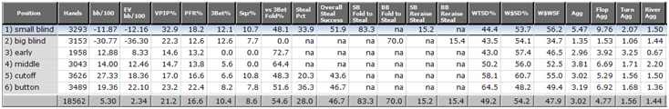
Charts
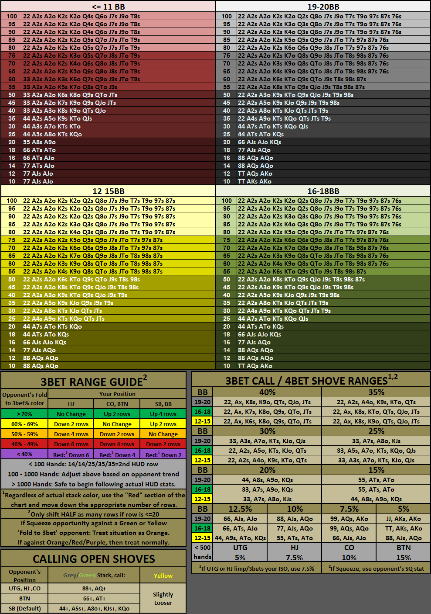
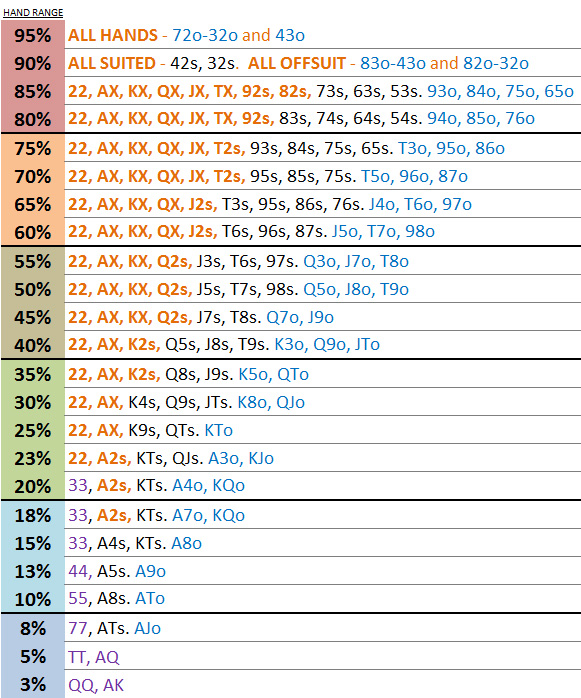
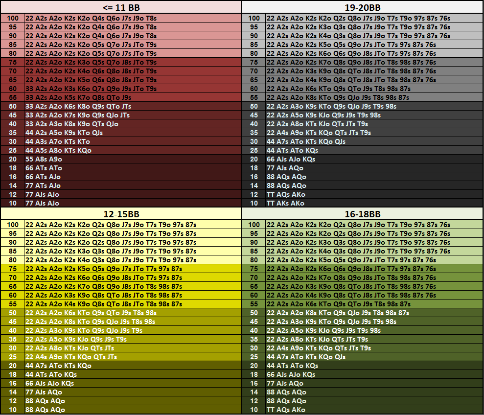
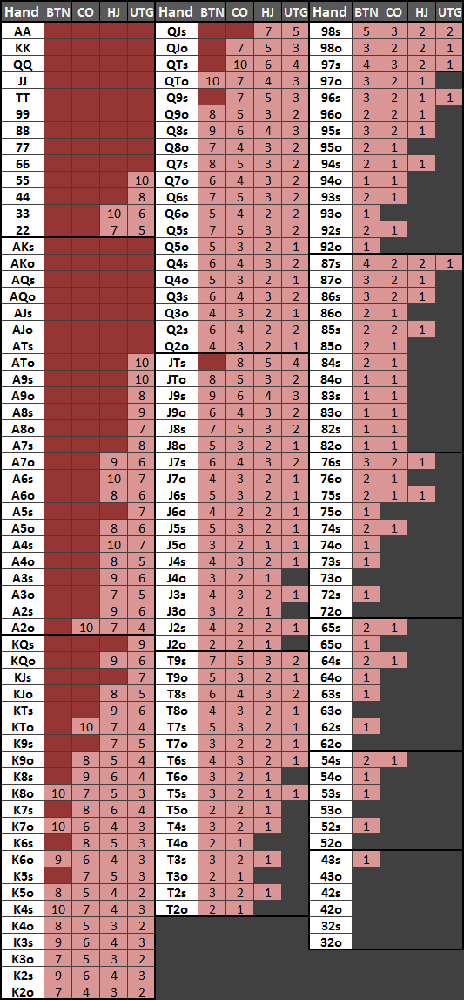
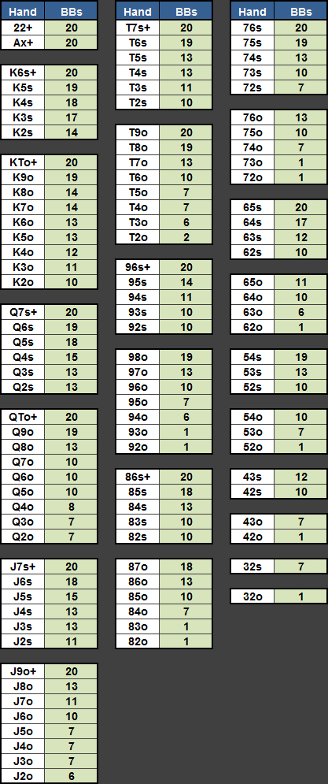
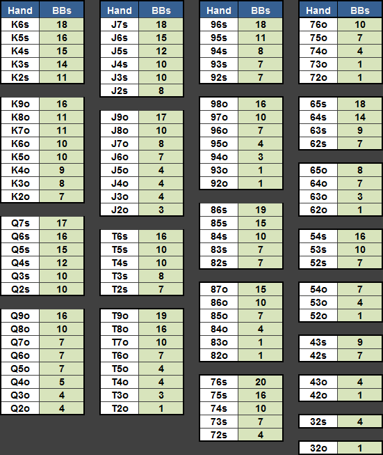
Content © Wizard of Ahhs (2011) · 排版整理：撲克工具箱
← 回到撲克工具箱